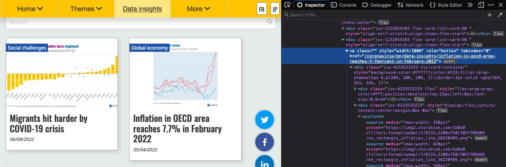
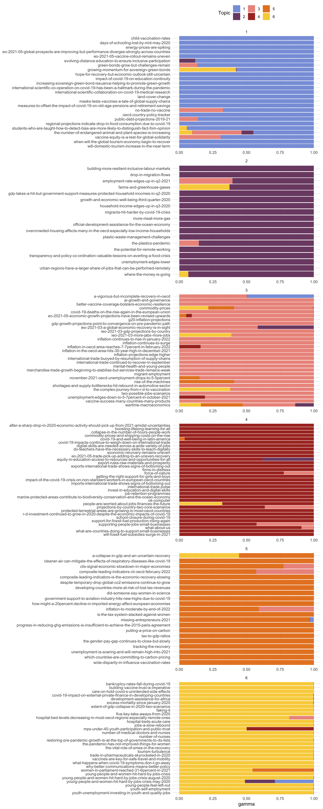

18 OECD
I have a potential thesis student who wants to work with topic modelling next year. Although I have a publication using latent dirichtlet analysis (LDA), my former postdoc, Ant Lee, did the main analysis, so I need to brush up. I’m also keen to practice my web scraping skills, so I thought I’d scrape the OECD data insights page to see what topics they’ve been posting about.
18.1 Data
The data insights page only shows a few entries at first. So I had to click on “Show more” a bunch of times until I accessed all of them, and download the webpage first, then search the download with rvest.
I used the developer tools in FireFox to find out that each “card” had a class of “card-list-card-50” and the link to the insight page was in the only “a” tag in each card.

Scrape URLS
# saved from https://www.oecd.org/coronavirus/en/data-insights/
html <- read_html("data/OECD | Data insights.html")
nodes <- html_nodes(html, ".card-list-card-50 a")
urls <- html_attr(nodes, "href")
# narrow down to only links to the data-insights section
insight <- map_lgl(urls, str_detect, "/data-insights/")
insight_urls <- urls[insight] %>% unique()Then scrape the contents of each link and extract all of the paragraph text. Save this as a RDS object, set the code chunk to eval = FALSE, and load from that so this doesn’t scrape OECD every time.
Get rid of the rows that just have the text, “Follow us (Social Media):”.
18.2 Topic Modelling
Now the fun part. I used the Topic Modelling chapter from Text Mining with R.
Code
[1] "countries" "oecd" "covid" "19"
[5] "economic" "pandemic" "2020" "2021"
[9] "global" "growth" "economies" "people"
[13] "recovery" "trade" "crisis" "outlook"
[17] "health" "measures" "inflation" "compared"
[21] "sectors" "women" "energy" "income"
[25] "percentage" "policy" "food" "economy"
[29] "governments" "green" "support" "data"
[33] "expected" "rates" "digital" "international"
[37] "levels" "employment" "tax" "jobs"
[41] "lower" "world" "2019" "gdp"
[45] "impact" "pre" "vaccines" "supply"
[49] "unemployment" "united" Let’s get rid of all the integers 0 to 2030, “countries”, and “oecd”, which are likely to be so common as to be meaningless.
18.2.1 LDA
Convert the word_counts table to dtm format and run the LDA. I used k = 6 to extract 6 topics. I tried a few different values with the interpretive steps below, and 6 seemed reasonable to interpret. There are formal ways to assess this, but it’s beyond what I have time to do today.
18.2.2 Top Terms
Get the top 7 terms for each topic.
Code
| topic | words |
|---|---|
| 1 | green, covid, global, pandemic, bond, bonds, sovereign |
| 2 | income, measures, capita, household, total, percentage, employment |
| 3 | inflation, economic, pandemic, pre, global, outlook, compared |
| 4 | covid, pandemic, recovery, economic, trade, people, education |
| 5 | tax, economic, growth, carbon, economies, emissions, gdp |
| 6 | covid, health, crisis, people, pandemic, public, women |
18.2.3 Document Topics
Now we need to figure out what these topics are. I don’t have a great sense from the top words, so we’ll can also make a table of gammas, which score each “document” (url in our case) on each of the 6 topics.
Then determine the main topic for each document and plot the topic mix for each document, grouped by main topic.
Code
gammas %>%
group_by(title) %>%
mutate(main_topic = max(gamma) == gamma,
main_topic = ifelse(main_topic, topic, 0),
main_topic = sum(main_topic)) %>%
ungroup() %>%
ggplot(aes(x = title, y = gamma, fill = as.factor(topic))) +
geom_col() +
coord_flip() +
scale_x_discrete(labels = rev)+
MetBrewer::scale_fill_met_d("Archambault") +
labs(x = NULL, fill = "Topic") +
facet_wrap(~main_topic, scales = "free", ncol = 1) +
theme(legend.position = "top")
18.2.4 Add Topic Labels
After looking at the table above, there are my best guesses for topic labels. Update the facet labels with the as_labeller() function.
Code
topics <- c("global covid effects",
"household economics",
"economic recovery",
"pandemic recovery",
"economic growth",
"personal covid effects")
names(topics) <- 1:6
top_terms %>%
mutate(term = reorder_within(term, beta, topic)) %>%
ggplot(aes(beta, term, fill = factor(topic))) +
geom_col(show.legend = FALSE) +
facet_wrap(~ topic, scales = "free_y", nrow = 2,
labeller = as_labeller(topics)) +
scale_x_continuous(breaks = seq(0, 1, .01)) +
scale_y_reordered() +
labs(x = NULL, y = NULL,
title = "LDA Topic Analysis of OECD Data Insights",
caption = "Data from www.oecd.org/coronavirus/en/data-insights/ | Plot by @lisadebruine") +
MetBrewer::scale_fill_met_d("Archambault")![LDA Topic Analysis of OECD Data Insights -- A plot of six topics and their top 7 words -- global covid effects = green, covid, global, pandemic, bond, bonds, sovereign; household economics = income, measures, capita, household, total, percentage, employment; economic recovery = inflation, economic, pandemic, pre, global, outlook, compared; pandemic recovery = covid, pandemic, recovery, economic, trade, people, education; economic growth = tax, economic, growth, carbon, economies, emissions, gdp; personal covid effects = covid, health, crisis, people, pandemic, public, women](18-oecd_files/figure-html/day18-1.png)